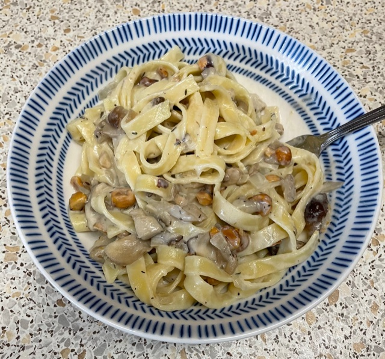

Mushroom & Parmigiano Reggiano pasta
Hazlenuts
- Roast 40g hazelnuts or walnuts at 180°C for 15 min, then chop
Mushrooms
- Heat for 10 mins
- olive oil
- 200g mixed mushrooms
- 1 shallot chopped
- ½ tsp thyme
Sauce
- Melt 15g butter in pan on lowest heat
- Gradually sprinkle and stir in 15g plain flour to make roux, then cook for 1 min
- Slowly stir in 250ml warmed milk and stir until sauce thickens (lower heat if sauce bubbles)
- Add 60g Parmigiano Reggiano or Gruyere grated
- Remove from heat and add mushrooms and hazelnuts
Pasta
- Mix sauce, nuts and mushrooms with
- 200g tagliatelle or parpadelle
- pasta cooking water (if required)
Serve with
- ground pepper
- parsely sprinkled for colour
- chopped sausages
Notes
- need to add some milk before all flour or else dough forms
- hazelnuts will burn and be bitter if overcooked, check every few mins
- parpadelle best
- Original
recipe
